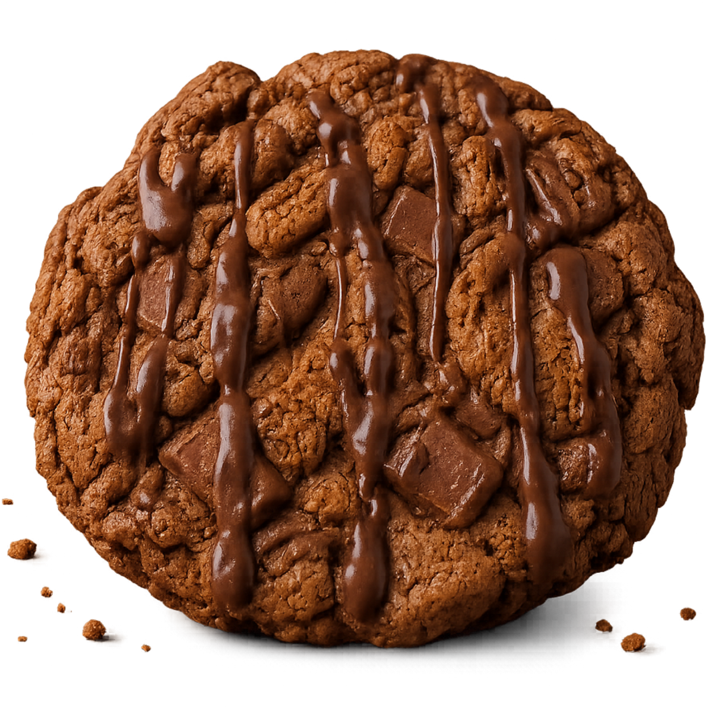

About
Hi, I'm Jake.
I'm the baker behind Jake's Bakes.
Jake's Bakes started with one simple idea: everyone deserves a proper cookie to look forward to at the weekend.
I bake everything from my home and keep each weekly drop deliberately small. That means every batch gets the time and attention it deserves, from mixing the dough to packing each order ready for collection.
At the moment, the menu is centred around one signature bake: a rich brown-butter cookie loaded with Biscoff, white chocolate and milk chocolate, finished with a smooth, milky Nutella drizzle.
Pre-orders open every Friday. I then prepare and bake everything fresh during the week, ready for collection the following Friday.
Jake's Bakes is a small home business, not a large production line. There is no endless menu or mass-produced stock sitting around. The focus is simple: one premium cookie, made carefully in small batches of four or six per order.
Whether you are sharing them, giving them as a gift or keeping the whole order for yourself, Jake's Bakes is here to make your weekend a little better, one proper cookie at a time.
Choose your order